Autonomous Dynamometer for Lab Testing Environment
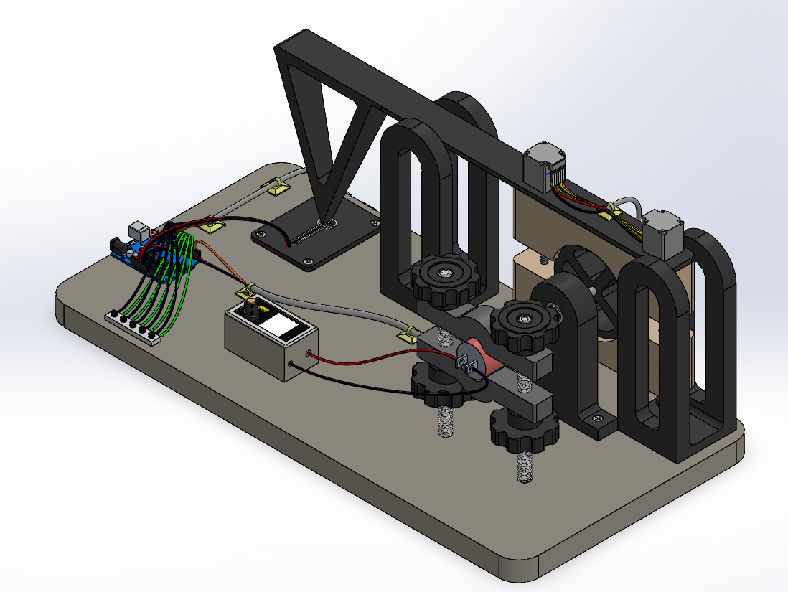 The goal of this project was to design an autonomous dynamometer for a lab testing environment. The purpose of this design was to significantly reduce the manual labour and lead time required to generate a torque-speed curve.
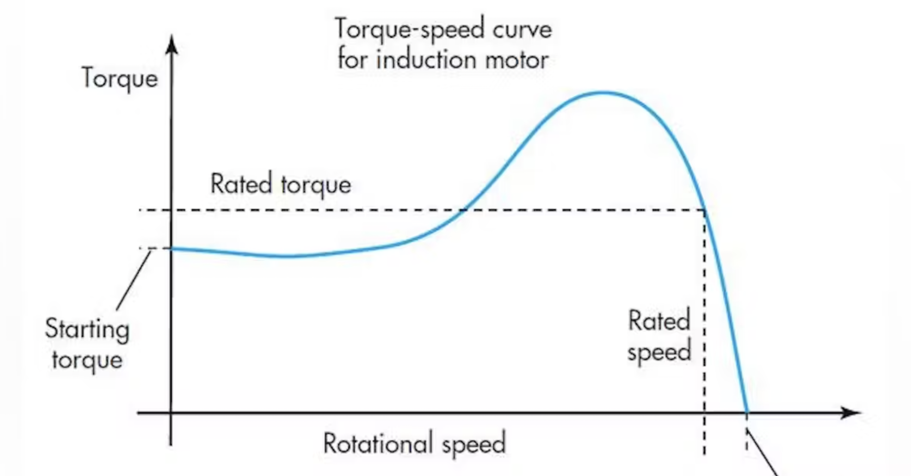
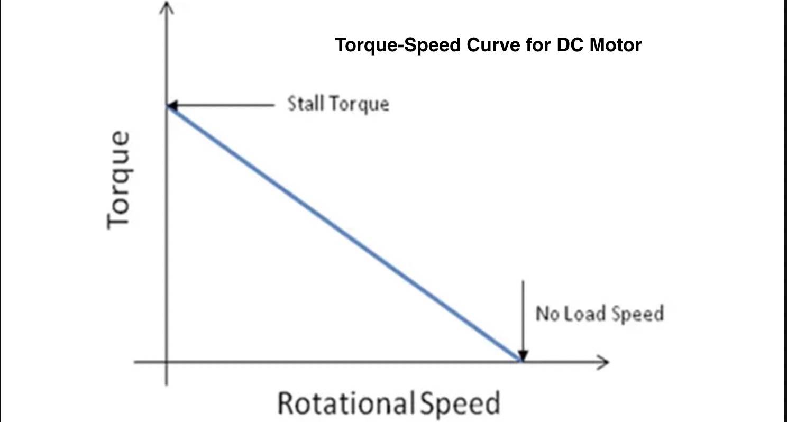
System Breakdown
As can be seen in the figure below, a system breakdown yielded three subsystems of interest. Note that dashed lines represent a data transfer while solid lines represent an energy transfer. 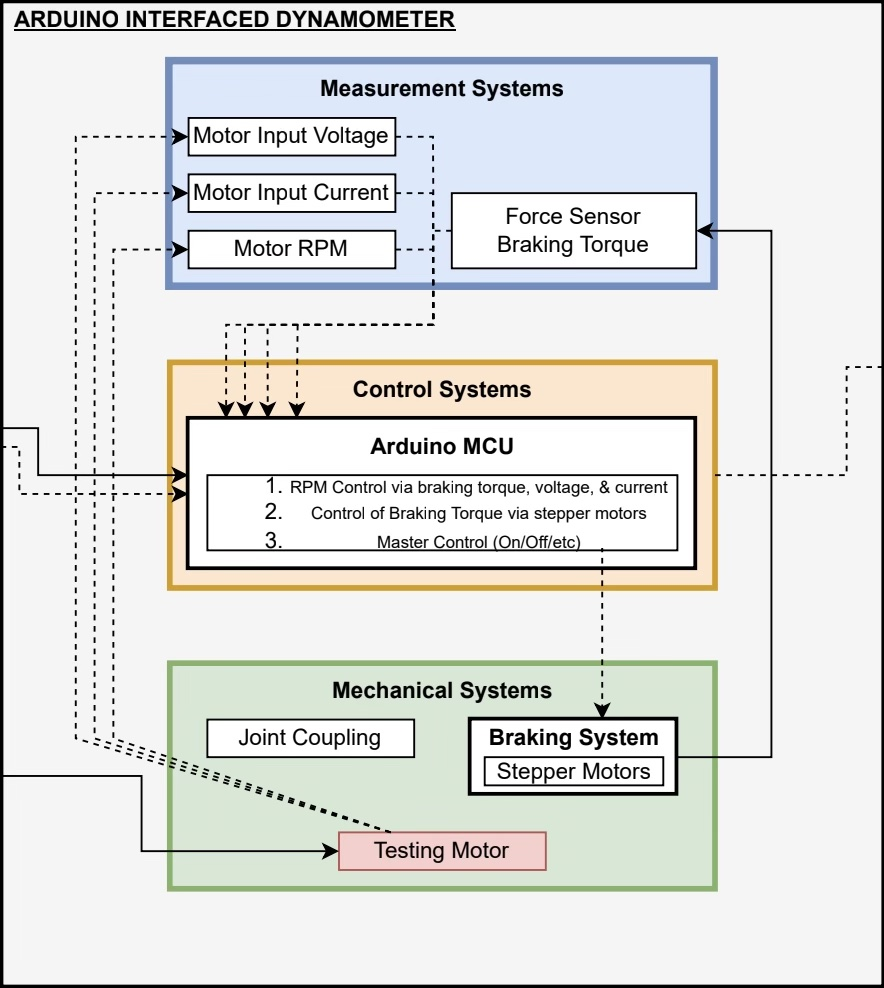 Mechanical SystemsAt it's core, the mechanical system is centered around the use of a prony brake; a pre-existing design used for relating speed & torque on a given motor. As the wooden blocks are tightened against the flywheel, it slows down and induces a reactionary torque upon the moment arm. 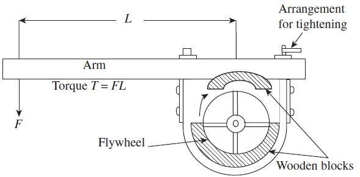 Stepper motors were used to tighten the wooden blocks against the flywheel. To convert the rotation of a given stepper motor into a linear motion of the brake pads, the two motors were equipped with lead screws and threaded bolts. 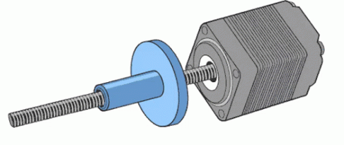
Measurement systems
For the purposes of this design, the following measurements were of interest:
(1) Motor Output: RPM
(2) Motor Output: Torque
(3) Motor Input: Voltage
(4) Motor Input: Current
Note that the inclusion of parameters (3) and (4) will allow operators to make efficiency measurements.
Input Power = Voltage * Current
Output Power = Torque * Speed
%Efficiency = (Output Power/Input Power)
[1]Motor Output: Speed/RPM
The most practical way to measure shaft speed was to use a hall effect sensor. It operates on the principle that as a magnet approaches the sensor, it's output voltage will rise. By attaching a magnet to the flywheel and polling the sensor for a positive rise, the hall effect sensor has effectively become a Tachometer.
 Note: For the following implementation to work, the polling
rates of both the sensor and microcontroller must greater than twice the
motors maximum frequency. See
Nyquist–Shannon Sampling Theorem
for more information.
Note: For the following implementation to work, the polling
rates of both the sensor and microcontroller must greater than twice the
motors maximum frequency. See
Nyquist–Shannon Sampling Theorem
for more information.
[2]Motor Output: Torque
To measure the motor's output torque, a load cell was placaced underneath the prony brake's moment arm. Load cells provide measurements of point force "F" in terms of an output voltage "Vout".
As shown in this image, by attaching the load cell to the end of the moment arm, measurements of the aforementioned point force "F" can be converted to torque "T" via multiplication of arm length "L". The load cell used for this application would be an FSR402 paired with a resistor of 3,000 ohms.
As is the case for all load cells, it was necessary to perform a static calibration process. 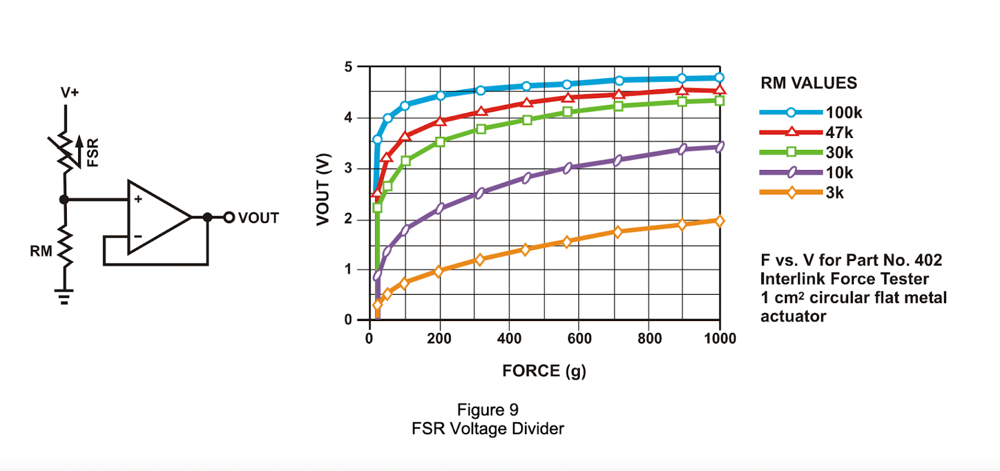
[3]Motor Input: Voltage
To measure voltage across the motor is a relatively simply task, however many motors operate at a voltages that exceed the operational range of an Arduino's Analog-Digital-Converter (5V). For this reason, a voltage dividing circuit was constructed in parallel to the motor. 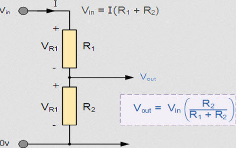 Using two analog inputs, a microcontroller could measure the difference between the two nodes of R2, and calculate the voltage across the motor.
[4]Motor Input: Current
To measure the current being drawn by the motor, a DIY ammeter was constructed.
In a process similar to that of the voltmeter, the DAC would sample voltage readings across a known resistor and calculate the difference between them. Once the potential difference is known, Ohm’s Law would be applied to solve for current. 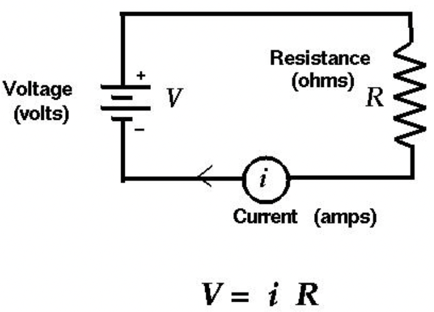
Control Systems
After careful consideration of the problem statement and system requirements, it was determined that a closed-loop control system would not be necessary if the systems braking torque were applied by a stepper motor. This is due to a unique characteristic of stepper motors in that the motor's position can be commanded to move and hold at discrete intervals without any position sensor for feedback (an open-loop controller). The following open-loop control systems would be implemented.
- Manually Increment Stepper Motors
- Manually Decrement Stepper Motors
- Initiate Autonomous Motor Test from Stall Torque(0 RPM)
- Initiate Autonomous Motor Test from No-Load Speed (0 Torque)
- On/Off
Implementation
The circuit diagram shown below displays the wiring configuration of the final cicruit. It will be referred to numerous times in the following section. Black cables lead to circuit ground (0V) while red cables carry voltage from a source.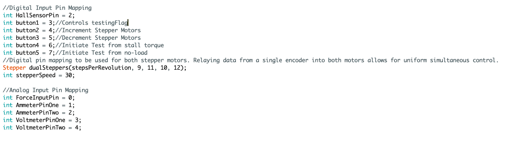 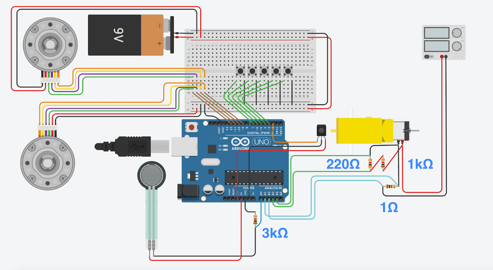 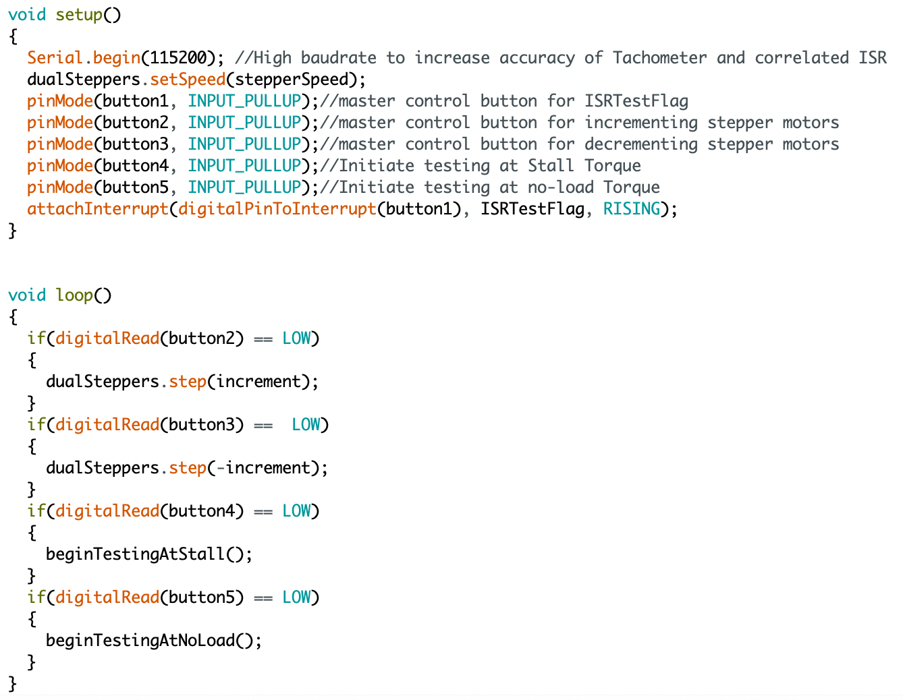[1]Motor Output: Speed/RPM
The tachometer makes use of a 3-pin Hall Effect Sensor. The positive and negative nodes are connected to 5V Power and 0V ground respectively. The the output pin is wired directly to the Arduino's digital input buss via pin 2 (orange wire). 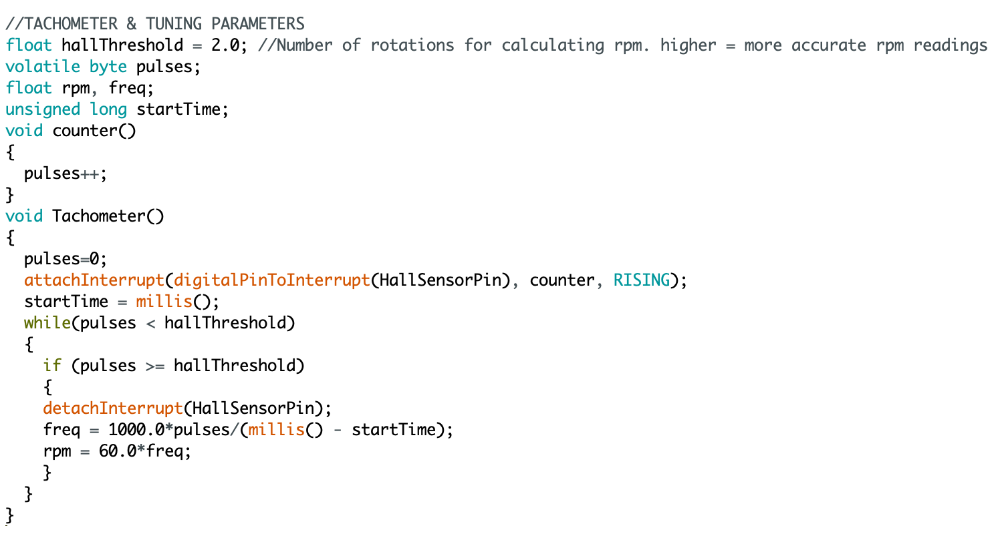 Upon calling the "Tachometer()" function, the Arduino will be handled by an interrupt named "Counter()”, triggered by a rising edge from the Hall Effect Sensor. The purpose of this interrupt is to count rotations of the flywheel over a given time interval, effectively measuring the RPM of the testing motor. The amount of rotations used to calculate RPM is a tweakable tuning parameter hallThreshold.
[2]Motor Output: Torque
Torque measurements are gathered via analog input pin 0 (blue wire), between the negative node of the FSR and the postivie node of the 3,000 ohm resistor. For a sensor of this type, it was necessary to perform a static calibration process such that the measured voltage could be converted into a meaninful and accurate measurement of force. The calibrated system was modelled as a Piecewise linear function. 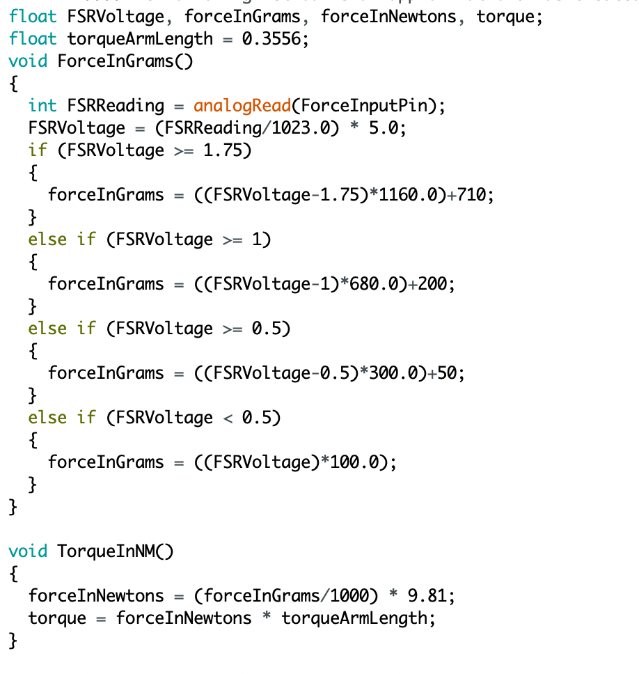 Note: The built-in ADC has a sampling resolution of 10 bits. This means that there are 210 (1024) possible input values corresponding to the range between 0 and 5 volts. This integer input is manually converted into "FSRVoltage", a floating point value between of 0 and 5.
[3]Motor Input: Voltage
Using two analog inputs (pins 3 and 4, green wires), the voltmeter implemented makes use of simple ohm’s law to quickly return the voltage across a given testing motor. Should future testing requirements call for alternative scaling of voltage division, the values of the two resistors have been provided as tweakable tuning parameters vResistor1 and vResistor2. 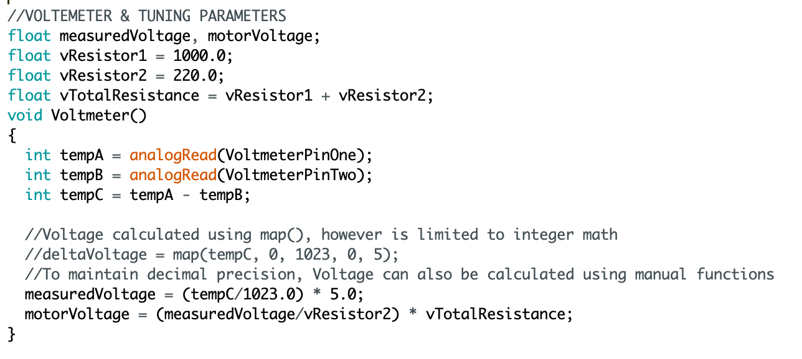 Note: As mentioned above, the Aanalog-Digital-Coversion has a resolution of 210 (0→1023), and must be converted to a floating point between 0 and 5 volts.
[4]Motor Input: Current
In a process similar to that of the voltmeter, the DAC samples voltage readings across a known resistor and calculate the difference between them. Once the potential difference is known, Ohm’s law is applied to solve for current. 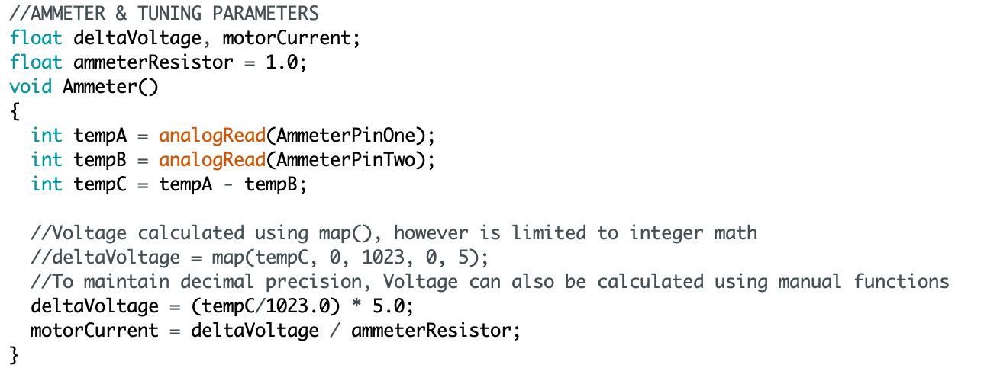 Should future designs and testing requirements call for a more or less sensitive ammeter, the value of the resistor has been provided as a tweakable tuning parameter.
Control System
As mentioned above, the use of stepper motors offers the lucrative opportunity to simplify & cheapen this design through the implementation of an
open-loop control system as opposed to one that is closed.
This figure below shows the highest branch in the program code, the main loop. This loop serves only to scan for user input. From here, the system may be primed into one of two possible testing conditions. By adjusting the clamping force applied to the motor, testing may be initiated from either stall torque or no torque. 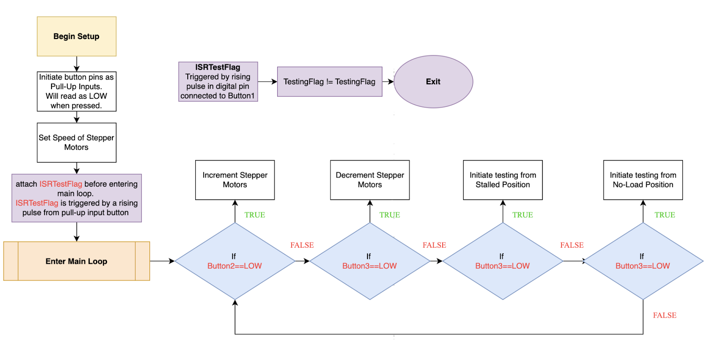 Note: The inclusion of a new interrupt routine ISRTestFlag, implemented as a safety mechanism to rapidly abort a motor test should anything go wrong.
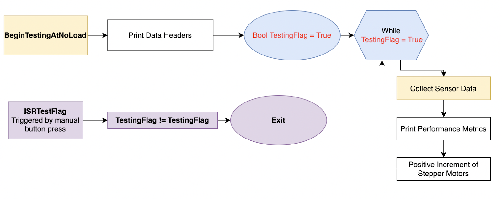 ===================================================================================================================================== 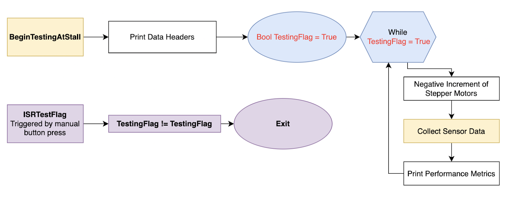
Conclusion
The purpose of the design was to automate an existing Dynamometer setup by integrating an Arduino microcontroller, electronic sensors, and a central control system. The design successfully met its objective. The range of motors that the design can test is constrained by multiple parameters; namely the maximum stall torque the design could handle.A possible progression would be to innovate this design to cater to a larger range of motors; most notably, induction motors.